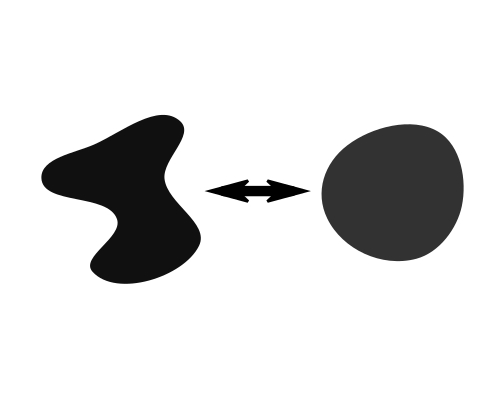
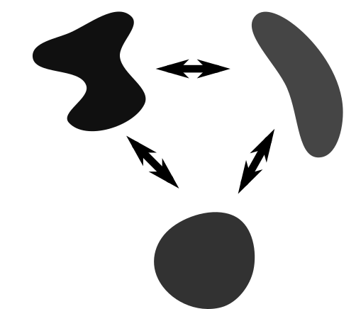

|

|
|
| What causes disease? How can we improve crop yield? | How do (our) cells functions? | What is inside (our) cells? |
2
From two to three conditions |
problem
solution
conclusion




- R package
- Useful for multiple designs
- Different statistical tests depending on the biological question
- 3 co-publications
- 4 other studies
- Limited to 3 dimensions
- Slow implementation of permutation test
- Better statistical framework
3
Module detection comparison |
problem
solution
conclusion
- First large-scale evaluation of these methods
- Useful for users and developers
- Pinpoints challenges to interpretation and accuracy
- 1 first-author publication
- Used by developers
- Used by users, e.g. Plasmodium life cycle
- Limited to larger datasets
- Limited to bulk (and mostly microarrays)
- Extendability could have been better
- Single-cell data changes the playing field
- Other omics data types
4
Trajectory inference comparison |
problem
solution
conclusion
- First large-scale evaluation of these methods
- Useful for users and developers
- Pinpoints challenges to interpretation and accuracy
- 1 first-author publication
- Used by developers
- Used by users, e.g. Plasmodium life cycle
- Limited to larger datasets
- Limited to bulk (and mostly microarrays)
- Extendability could have been better
- Single-cell data changes the playing field
- Other omics data types
6
Future of trajectory inference
[ a problem
and a possible solution ]